“朋友”这个再熟悉不过的字眼，却总是能带给大家许许多多的美好的瞬间，一如昨晚上的会议，一开场主席kiki就用非常别样的介绍方式，让大家一下子就打成一片，有朋自远方来，不亦说乎？先上一组非常简单但高度概括了昨晚会议的动图吧~
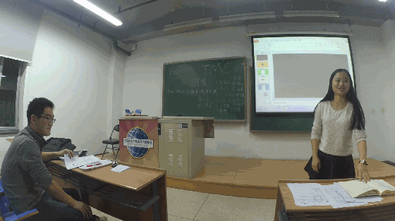
kiki的莞尔一笑~
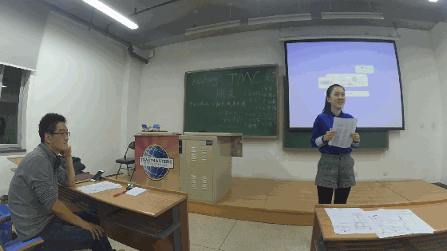
Amy的忍俊不禁~
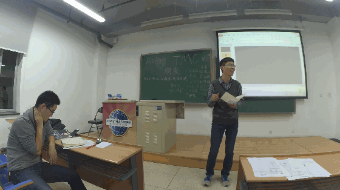
深深的载笑载言~
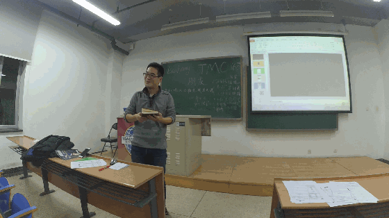
永光的眉开眼笑~
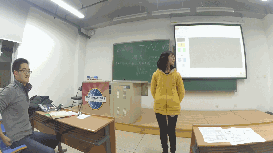
雅喻的嫣然一笑~
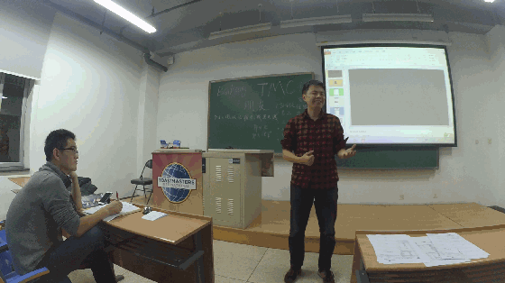
大帝的谈笑风生~
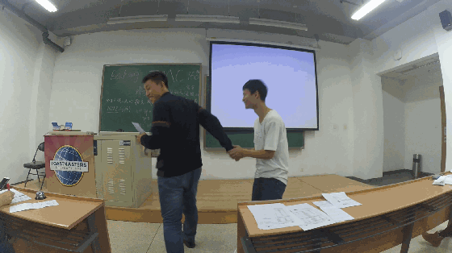
盖茨比的哄堂大笑~
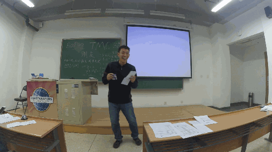
德隆的捧腹大笑~
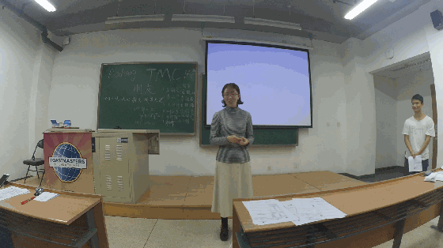
还有我们历经千辛万苦终于找到北航头马的女嘉宾的甜甜一笑~
你们的笑容是对北航头马最好的肯定~~

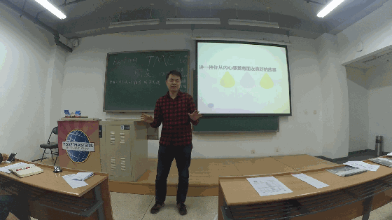
闭着眼睛都猜到是谁第一个给大家来做演讲了，没错，大帝依然带来了一如往常的高质量的演讲，讲一件从内心觉得有朋友真好的事，大帝讲了好几件，最后都畅想到以后和他的好哥们到一个城市里去生活~
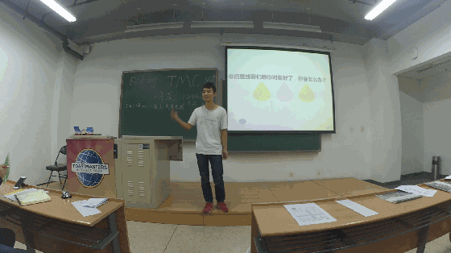
这个题目有点超纲啊，对于初次看到这题目的盖茨比显然是一脸萌币的状态啊，完全不知道从哪个角度作答的他只好信口开河乱说一通，hiahia，下次编故事也得好好把故事编完整点嘛对不？
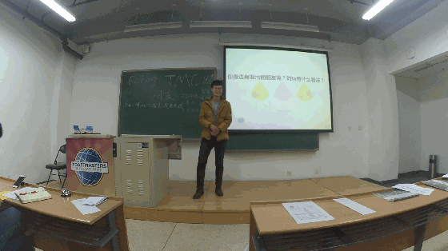
Francis身边看来确实有很多很污很污的朋友啦，不过正如他所言，正是这样的 多元化，你的每一天或许都会变得更加精彩~~嗯，同意+1s
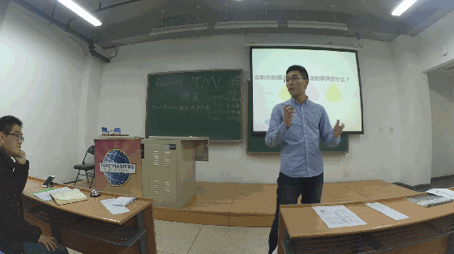
真的不得不说博文的脑子转的真快，看完题目就能搜索出脑海里最2b的事情（抱歉，一碰到最***的一件事诸如此类的题目我都会看天花板20秒然后选择待机模式。。。），像凌晨去玩别人包夜的机子这样的事情确实是很2b的事情啊！omg，大写的服。
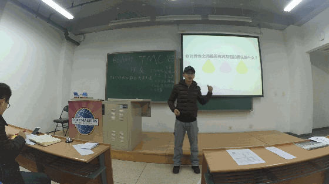
佳霖第一次来北航tmc，但是演讲水平之高，征服了在场的每一位观众，毕竟管理着有着几十万阅读量的自媒体平后台的男人啊~真不是盖的，厉害了。
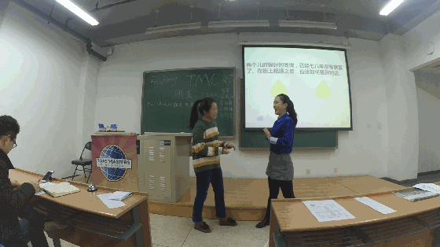
两个人10年没见面，再相逢竟然不会忘了要份子钱？也只有二姐能有这么神来之笔的发挥了吧~~
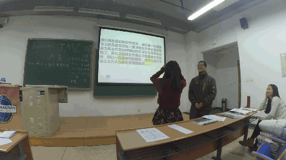
曾经的像女方告白过的男方在街上偶遇女方的男友和其他女生好上，男生选择告诉女生，可又怕女生考虑到两人关系而不当回事，男方酷苦苦劝说下，女方选择相信，最后两人披露心绪，“那就在一起吧~”，怎么和韩剧这么像？都是套路？

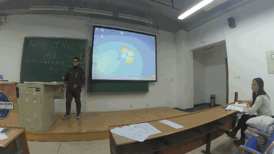
一个人的成功啊，不仅要靠个人的奋斗，也要考虑到历史进程。
天辉带来了他最真实的个人经历，虽然他也没比我们大多少，但已经觉得他的这些年是多么的不容易，我们大家都听的非常入迷，甚至已经在心里给你竖起了无数个大拇指~天辉好样的，感谢你的真诚分享，也希望你的未来像天空一样明亮，彩虹一般辉煌~
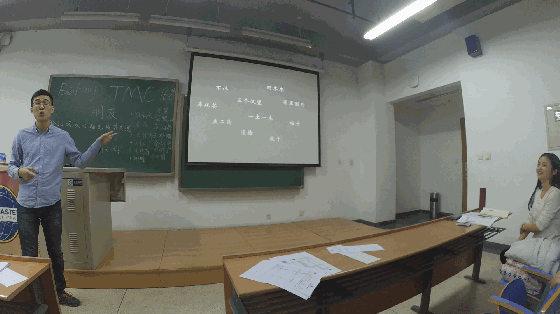
说起自媒体，其实时下最兴的就是微信平台了，博文和他的小伙伴也创办了自己的微信公众平台-霖文不讳（没关注的赶紧关注去吧~），小编曾简单的浏览了里面的诸多文章，形式多样，内容丰富，而听了博文讲了他们背后的故事，更加觉得这其间的诸多不易，局座经常教导我们要说自己的话，我认为这种形式也算是就是勇于表达自我的一个平台了吧~


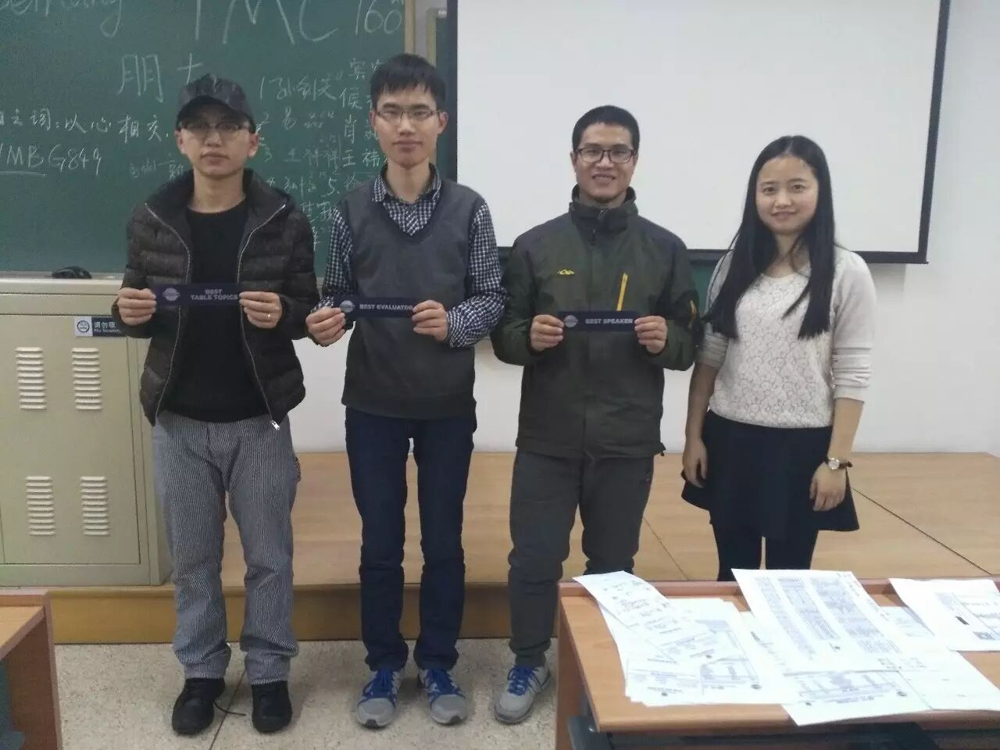
全场最佳即兴演讲者-李佳霖
最佳备稿演讲者-郭天辉
最佳点评者-王磊
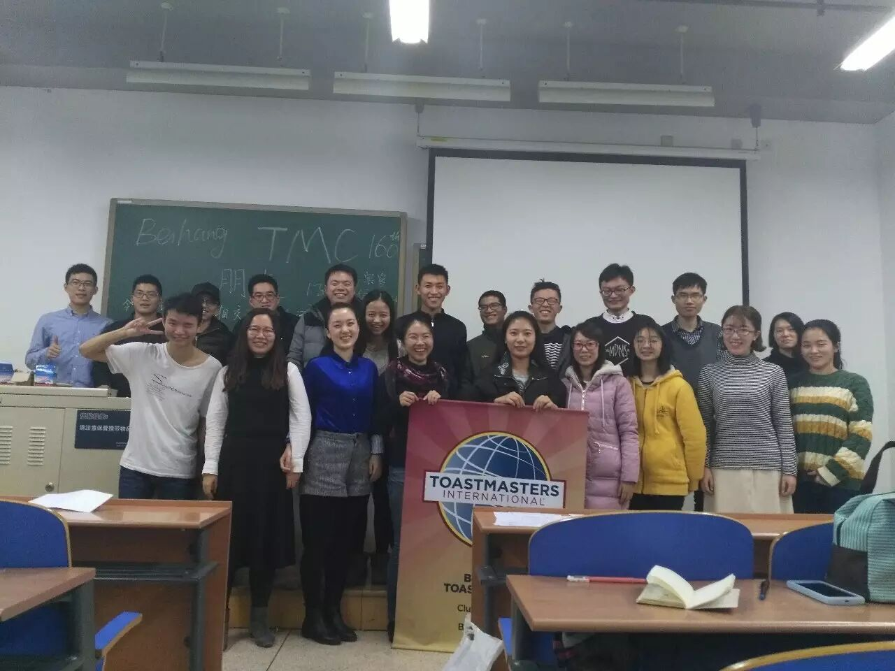
最后是我们的大合照~~
北航头马欢迎每一位渴望交流的小伙伴的加入
只要你想，你敢勇敢的表达自我
北航头马的舞台就属于你
我们每周五晚7点半 新主楼不见不散
具体地点请在每次活动之前关注我们微信公众账号具体通知
以上~
最后是每位演讲者的演讲视频的百度云盘链接
TT-keven 链接：http://pan.baidu.com/s/1i4ZjK2p 密码：bodv
TT-Flair && Britney 链接：http://pan.baidu.com/s/1pKV9If5 密码：nnno
TT-gastby 链接：http://pan.baidu.com/s/1nuKi3NV 密码：w3su
TT-Lijialin 链接：http://pan.baidu.com/s/1nve1o6l 密码：h3fi
TT-francis 链接：http://pan.baidu.com/s/1c25NX5m 密码：v4pq
TT-bowen 链接：http://pan.baidu.com/s/1eRRivrc 密码：pfhk
TT-Xulixia && Amy 链接：http://pan.baidu.com/s/1bpED5cb 密码：817d
CC-bowen 链接：http://pan.baidu.com/s/1hrCRjve 密码：r939
CC-Flair 链接：http://pan.baidu.com/s/1ge7321d 密码：79yv
https://mp.weixin.qq.com/s/Qo1D6QEVjZNpg2NaMAP7NA
本页为抢救式本地归档，图文已永久保存。